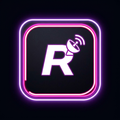

GTA-style radio overlayRRadio
RRadio est une application Windows qui affiche une radio façon Vice City par-dessus vos jeux. 8 stations, 139 titres, un HUD transparent et Discord Rich Presence.
- Radio en continu, sans compte
- Mixes YouTube intégrés, sans connexion Google
- Connexion Google optionnelle pour vos playlists YouTube Music